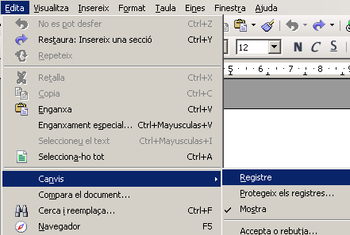

Control de canvis
En moltes ocasions cal portar control dels canvis que es van realitzant en un document:
-
Si apliquem els procediments de qualitat ISO al centre, cal fer un seguiment de les modificacions realitzades al document.
-
Si el fitxer és modificat per diferents persones, cal saber quines alteracions ha fet cadascú abans de validar la versió definitiva.
-
Si el document és força gran (per exemple un treball de recerca), és interessant per al / a la professor/a tutor/a saber quins canvis ha realitzat l'alumne/a des de la darrera revisió.
-
…
Enregistrar i mostrar canvis
Quan un document és treballat per diverses persones, cal portar un control dels canvis que s'hi van realitzant.
-
Per tal d'activar aquests canvis, una vegada obert el document que voleu controlar, feu Edita | Canvis | Registre.

-
Una vegada heu configurat que voleu enregistrar els canvis, veureu que el text entrat de bell nou apareix destacat en color, mentre que el suprimit apareix ratllat. Cas de modificar una línia sencera, aquest fet també apareix destacat al marge.
-
Si col·loqueu el punter del ratolí damunt d'un dels fragments modificats, veureu la referència de qui la va fer i quan.
-
Quan torneu a fer Edita | Canvis | Registre, veureu que s'atura la gravació dels canvis.
Cal tenir present que no es desen totes les modificacions que aneu fent; només es fa en el cas de les més habituals (addició o supressió de text, canvi de format…), però no en el dels canvis menors (per exemple, un canvi del tipus de tabulació). Tots els aspectes referents a com es destaquen els canvis que es fan en un document poden ser configurats des de l'apartat Eines | Opcions | LibreOffice Writer | Canvis.

Revisar les modificacions
Quan en un document s'ha activat l'opció d'Enregistrar canvis, aquests es podran revisar per tal d'acceptar-los o rebutjar-los.
-
Feu Edita | Canvis | Accepta o rebutja. Veureu que apareixerà el quadre de diàleg Accepta o rebutja canvis.
-
Seleccioneu una a una les modificacions que apareixen a la pestanya Llista. La modificació triada es destacarà al document i la podeu acceptar o rebutjar (clicant el botó corresponent).
-
Recupereu el document siurana.odt.
-
Activeu el registre de canvis.
-
Situeu-vos cap a l'acabament del text, on es fa referència al ”Salt de la reina mora”.
-
Inseriu una note a peu de pàgina.
-
Com a text de la note, enganxeu-hi aquest text:
El Salt de la reina mora Un rei moro s'havia fet fort a l'inexpugnable castell de Siurana i no parava de fer guerra contra els cristians, que ja eren amos de tota la rodalia. La seva muller, anomenada Abdel Assia, era d'una bellesa sense parió, ornada amb totes les gràcies i tots els encants. En certa ocasió en què les forces mores estaven lluitant amb les del cristià Amat de Claramunt, senyor de Tarragona, la reina mora, que estava molt segura que el seu castell era inexpugnable, donava un esplèndid banquet als seus cortesans i gent noteble. La lluita era tan propera al castell que des de la taula se sentia perfectament la fressa. En començar a trincar, una fletxa cristiana va caure enmig de la taula i produí un pànic terrible, puix que es van adonar que els cristians havien pres el castell. Tots van prendre les armes, però ja era tard, car els cristians ja eren al pati. La reina fou prou llesta per muntar al seu cavall. Enmig de la confusió va escapar-se i es dirigí cap a la timba, seguida dels soldats cristians, els quals, en veure que la reina els fugia, corregueren per prendre-la. La reina, veient-se perduda i que anava a caure presonera, encarà el cavall devers l'abisme i es llançà daltabaix. Fou tal l'embranzida presa per la bèstia en escometre l'abisme, que deixà marcada a la roca viva de la vora la seva potada, que encara avui la gent del país ensenya. Joan Amades (1890-1959)
-
Podeu provar de fer algun canvi més i veure com surt destacat. A continuació, ja podeu revisar i acceptar o rebutjar els canvis.
LibreOffice Writer desa les modificacions realitzades en un document referenciades a l'usuari que ha fet el canvi, de tal manera que si un usuari ha modificat uns canvis fets per un altre, aquest fet es mostrarà de forma jeràrquica.
Treball amb diferents versions del mateix document
De vegades es disposa de diferents versions d'un mateix document i se'n volen fer comparacions per tal d'acceptar o rebutjar els canvis que s'hi poden haver produït.
Comparar versions d'un document
-
En primer lloc, cal obrir el document original.
-
A continuació cal fer Edita | Compara el document… i seleccionar el document modificat.
-
LibreOffice Writer fusionarà els dos documents i mostrarà un quadre de diàleg sol·licitant l'acceptació o rebuig dels canvis realitzats.
-
Obriu el document siurana.odt.
-
Feu Edita | Compara el document…
-
Seleccioneu el document siurana2.odt.
-
LibreOffice Writer combina els dos documents i presenta el quadre de diàleg Accepta o rebutja canvis.
-
Observeu que el text que apareix al segon document, però no a l'original, està referenciat com a supressió.
-
Observeu que el text que apareix al document original, però no a l'altre, està referenciat com a inserció.
-
Actueu a discreció, acceptant o rebutjant els canvis segons us sembli millor.

Unir versions d'un document
Si un document (per exemple, una programació d'una unitat didàctica) ha estat modificat per diverses persones, és possible unir les diferents versions amb l'original per tal d'acceptar o rebutjar els canvis que s'hi hagin pogut fer.
-
Obriu el document venus1.odt.
-
Feu Edita | Canvis | Fusiona el document…
-
Seleccioneu el document venus2.odt.
-
Observeu que els canvis realitzats a la còpia es veuen reflectits al document original, amb opció de revisió.

|
|

|
|